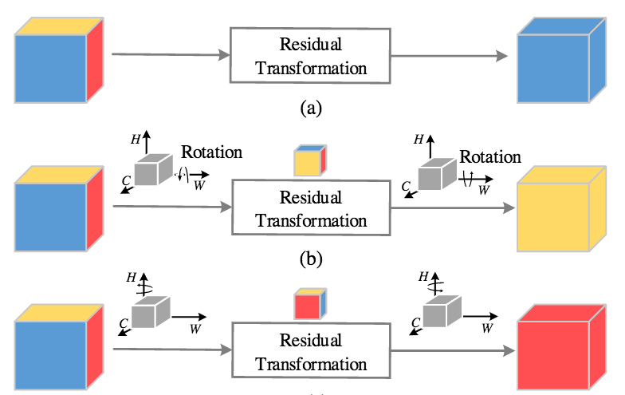

Pay Attention to Attention!
What is an Attention Mechanism? ü§î
Information Routing
Global Features
Interpretability


Multi-Head Self-Attention


Self-Attention vs. Attention
Attention: input $\rightarrow$ output
Self-attention: input $\leftrightarrow$ input
In transformers, self-attention is applied inside in the encoder
Attention is used between the encoder and decoder
For each output, attention computes $n$ weights
For $n$ inputs, self-attention uses $n^2$ attention weights
What About Compute? üñ•
Self-attention is not exactly easy to run…
$ (1920 \times 1080)^2 = 4299816960000 $
= ü§Ø
GPT-3 has 175 BILLION parameters
… and requires 22 GPUs …
… to run inference!
Solutions üß™
Reformer

Longformer

… And Many More
BigBird, Linformer, Lambda Networks, etc.
Triplet Attention
Goal: efficient attention mechanism for vision models


Z-Pool
$$ (C, H, W) \rightarrow (2, H, W) $$
Composed of convolution and pooling
Results
GradCAM

Resources
For More Attention & NLP
Questions❓
Big thanks to Mr. Ganesan Narayanasamy, Dr. Sameer Shende, and the OpenPOWER foundation for providing the compute infrastructure neccesary to run our experiments.